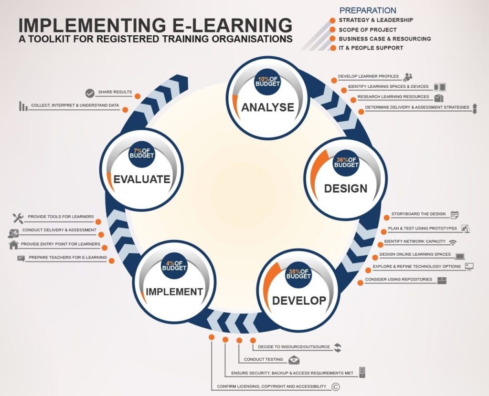

4.3 O modelo ADDIE


© Flexible Learning Australia, 2014

Muitos livros foram escritos sobre o modelo ADDIE (ver, por exemplo, Morrison, 2010; Dick e Carey, 2004). Apresento aqui apenas uma introdução muito breve.
4.3.1 O que é o ADDIE?
ADDIE significa:
Análise (Analyse)
- identificar todas as variáveis que precisam ser consideradas ao planejar o curso, como características dos aprendizes, conhecimentos anteriores dos estudantes, recursos disponíveis, etc. Esta etapa é semelhante à descrição do ambiente de aprendizagem descrita no Apêndice 1 deste livro;
Design
- esta etapa concentra-se na identificação dos objetivos de aprendizagem do curso e em como os materiais serão criados e projetados (por exemplo, pode incluir a descrição de quais áreas de conteúdo serão abordadas e um roteiro (storyboard) descrevendo o que será abordado em texto, áudio e vídeo e em que ordem), bem como a decisão sobre a seleção e o uso da tecnologia, como um LMS, vídeo ou mídias sociais;
Desenvolvimento (Develop)
- a criação do conteúdo, incluindo a decisão de desenvolver internamente ou terceirizar, autorização de direitos autorais para materiais de terceiros, carregamento do conteúdo em um site ou LMS, etc.;
Implementação (Implement)
- esta é a entrega real do curso, incluindo qualquer treinamento prévio ou orientação da equipe de suporte aos estudantes e a avaliação dos estudantes;
Avaliação (Evaluate)
- coleta de feedback e dados a fim de identificar áreas que necessitam de melhorias, o que alimenta o design, o desenvolvimento e a implementação da próxima iteração do curso.
4.3.2 Onde o ADDIE é usado?
Este é um modelo de design usado por muitos designers instrucionais profissionais para o ensino baseado em tecnologia. O ADDIE tem sido quase um padrão para programas de educação a distância desenvolvidos profissionalmente e de alta qualidade, sejam baseados em material impresso ou on-line. É também amplamente utilizado no e-learning e no treinamento corporativo. Existem muitas variações deste modelo (a minha favorita é “PADDIE”, onde o planejamento e/ou a preparação são adicionados no início). O modelo é aplicado principalmente de forma iterativa, com a avaliação levando à reanálise e a novas modificações de design e desenvolvimento. Uma das razões para o uso generalizado do modelo ADDIE é que ele é extremamente valioso para designs de ensino grandes e complexos. As origens do ADDIE remontam à Segunda Guerra Mundial e derivam do design de sistemas, que foi desenvolvido para gerenciar os complexos desembarques da Normandia.
Muitas universidades abertas, como a Open University do Reino Unido e a OU dos Países Baixos, a Universidade de Athabasca e a Thompson Rivers Open University no Canadá, ainda utilizam fortemente o ADDIE para gerenciar o planejamento de cursos complexos de educação a distância multimídia. Quando a OU do Reino Unido iniciou as suas atividades em 1971, com uma turma inicial de 20.000 estudantes, utilizava rádio, televisão, módulos impressos especialmente planejados, livros didáticos, reproduções de artigos de pesquisa sob a forma de leituras selecionadas enviadas por correio aos estudantes e grupos de estudo regionais, com equipes de frequentemente 20 acadêmicos, produtores de mídia e pessoal de apoio tecnológico que desenvolviam os cursos, e com a entrega e o apoio aos estudantes fornecidos por um exército de tutores regionais e orientadores seniores. Criar e entregar os seus primeiros cursos dentro de dois anos após receber a sua autorização de funcionamento teria sido impossível sem um modelo de design instrucional sistemático e, em 2014, com mais de 200.000 estudantes, a OU do Reino Unido ainda utilizava a abordagem ADDIE em muitos dos seus cursos.
Embora o ADDIE e o design instrucional em geral tenham se originado nos EUA, o sucesso da Open University do Reino Unido no desenvolvimento de materiais de aprendizagem de alta qualidade influenciou muito mais instituições que ofereciam educação a distância em menor escala a adotar o modelo ADDIE, ainda que de forma mais modesta, normalmente com um único professor trabalhando com um designer instrucional. À medida que as disciplinas de educação a distância passaram a ser cada vez mais desenvolvidas como cursos on-line, o modelo ADDIE continuou a ser utilizado e é agora empregado por designers instrucionais em muitas instituições para o replanejamento de grandes turmas de aulas expositivas, aprendizagem híbrida e para disciplinas totalmente on-line.
4.4.3 Quais são os benefícios do ADDIE?
Uma das razões pelas quais tem sido tão bem-sucedido é que está fortemente associado a um design de boa qualidade, com objetivos de aprendizagem claros, conteúdos cuidadosamente estruturados, carga de trabalho controlada para professores e estudantes, mídias integradas, atividades relevantes para os estudantes e avaliação fortemente vinculada aos resultados de aprendizagem desejados. Embora estes princípios de bom design possam ser aplicados com ou sem o modelo ADDIE, este é um modelo que permite que esses princípios de planejamento sejam identificados e implementados de forma sistemática e completa. É também uma ferramenta de gestão muito útil, permitindo o planejamento e o desenvolvimento de um grande número de disciplinas dentro de um padrão de alta qualidade.
4.4.5 Quais são as limitações do ADDIE?
A abordagem ADDIE pode ser usada em projetos de ensino de qualquer porte, mas funciona melhor em projetos grandes e complexos. Aplicada a disciplinas com pequeno número de estudantes e a um design de sala de aula deliberadamente simples ou tradicional, torna-se cara e possivelmente redundante, embora nada impeça um professor individual de seguir esta estratégia ao planejar e ministrar um curso.
Uma segunda crítica é que o modelo ADDIE é o que se poderia chamar de “focado na fase inicial” (front-end loaded), na medida em que se concentra fortemente no planejamento e no desenvolvimento de conteúdos, mas não presta tanta atenção à interação entre professores e estudantes durante a realização da disciplina. Assim, tem sido criticado pelos construtivistas por não prestar atenção suficiente à interação estudante-professor e por privilegiar abordagens de ensino mais behavioristas.
Outra crítica é que, embora as cinco fases estejam razoavelmente bem descritas na maioria das descrições do modelo, ele não fornece orientações sobre como tomar decisões dentro dessa estrutura. Por exemplo, não fornece diretrizes ou procedimentos para decidir como escolher entre diferentes mídias ou quais estratégias de avaliação utilizar. Os instrutores precisam ir além do framework do ADDIE para tomar essas decisões.
A aplicação excessivamente entusiasmada do modelo ADDIE pode resultar em fases de design complexas demais, com muitas categorias de profissionais diferentes (professores, designers instrucionais, editores, web designers) e, consequentemente, uma forte divisão do trabalho, fazendo com que as disciplinas demorem até dois anos desde a aprovação inicial até a entrega real. Quanto mais complexa for a infraestrutura de design e gestão, maiores serão as oportunidades de estouros de orçamento e programação muito cara. É um excelente exemplo da abordagem industrial para o design de cursos.
A minha principal crítica, contudo, é que o modelo é demasiado inflexível para a era digital. Como um professor responde ao conteúdo novo em rápido desenvolvimento, às novas tecnologias ou aplicativos lançados diariamente, a uma base de estudantes em constante mudança? Embora o modelo ADDIE nos tenha servido bem no passado e forneça uma boa base para projetar o ensino e a aprendizagem, ele pode ser muito predeterminado, linear e inflexível para lidar com contextos de aprendizagem mais voláteis. Discutirei modelos de design mais flexíveis na Seção 4.7.
Referências
Dick, W., and Carey, L. (2004). The Systematic Design of Instruction Allyn & Bacon; 6 edition Allyn & Bacon
Morrison, Gary R. (2010) Designing Effective Instruction, 6th Edition New York: John Wiley & Sons
Atividade 4.3 Utilizando o modelo ADDIE
1. Pegue um curso que você oferece atualmente. Por quantas fases do modelo ADDIE você passou? Se você pulou algumas das etapas, acha que o curso teria sido melhor se as tivesse incluído? Dado o volume de trabalho necessário para passar por cada uma das fases, você acha que os resultados valeriam o esforço?
2. Se você está pensando em planejar um novo curso, utilize o infográfico da Flexible Learning Australia para trabalhar as quatro etapas de análise recomendadas. Isso foi útil? Se sim, você pode querer continuar com as outras etapas recomendadas.
3. Se você já utilizou o modelo ADDIE, está satisfeito com ele? Concorda com as minhas críticas? Ele é flexível o suficiente para o contexto em que você trabalha?
Não apresento feedback sobre estas questões, pois são para sua reflexão com base na sua própria experiência.